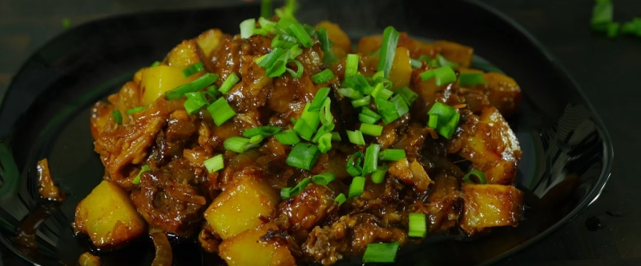

приготовление:
-
1 большую луковицу порезать четвертинками и обжарить в подсолнечном масле на сковороде до золотистости. Туда же на сковороду положить 2 ст.л томатной пасты и слегка помешивая минуту-две обжарить. Мелко порезать 2 зубчика чеснока, кинуть тоже на сковороду. Банку тушенки полностью отправить в зажарку, размять лопаткой на меньшие части, добавить два листа лаврушки, соль, перец молотый, 0,5 ст. воды, закрыть крышкой и тушить, пока готовится картошка.
-
6 картофелин почистить и порезать крупными кубиками. На отдельную сковороду положить 50 гр сливочного масла, когда оно чуть подтает - кунуть в него картошку с 1 ч.л. куркумы и жарить на большом огне примерно раз в минуту-две помешивая. Когда картошка будет почти готова - добавить в нее зажарку и тушить вместе под крышкой 7-10 минут. Выложить на тарелки и присыпать нарезанным зеленым луком.